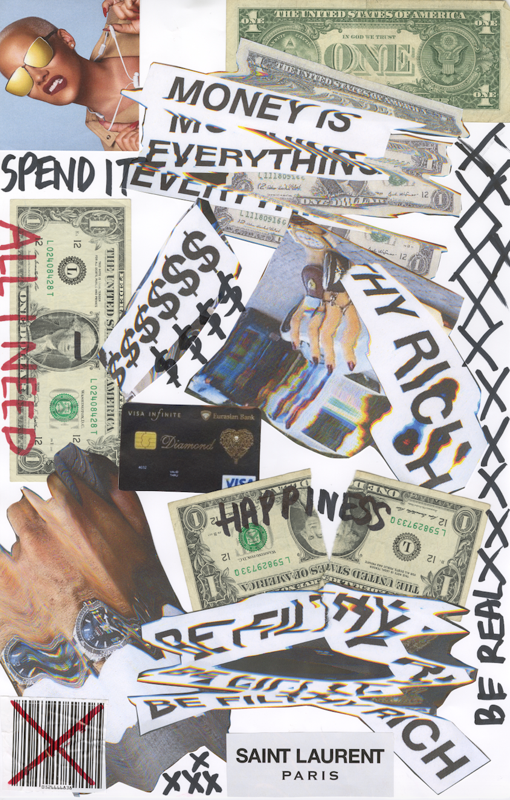
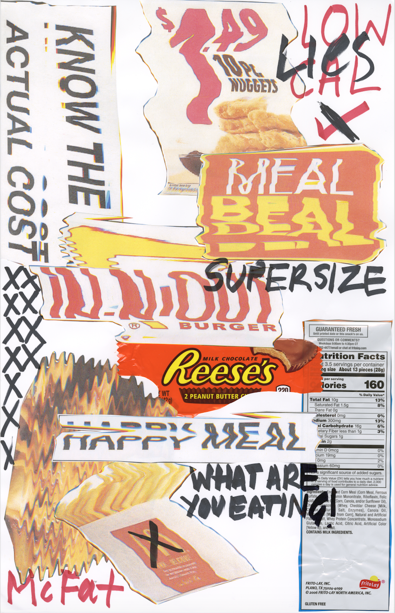
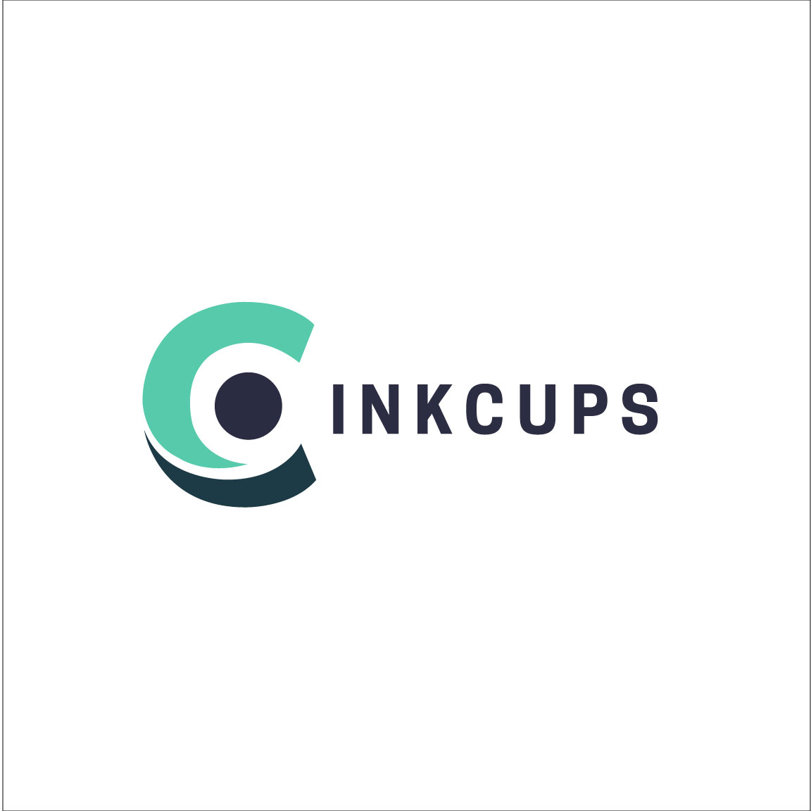

Christie Molloy
Hi there! My name is Christie and I am passionate about making the world a better place through design. Whether its designing campaigns to increase awareness, designing systems to increase efficiency, designing brands to increase engagement, or using design to answer questions, design is my contribution to the world.
As a designer it is important that I have an active voice in the community. See projects below.
Campaign Strategy
What if the percent of females interning in tech was 50?
There would only be positive outcomes for society. During my internship at Twitter I created the initiative @TerningTheTable: a campaign to increase the percentage of females interning in tech. Our goal is to #GetTo50 (percent) with a healthy number of URM's and engineering roles. We will do this by fostering a community of female students in tech and those who aren't in order to reach our goal.
Scanner + Mixed Media
What unhealthy distortions exist in your life?
Being from outside of the U.S., my commentary on contemporary culture is unique. I chose to focus on the unhealthy distortions that exist within
beauty, money, fast food, and politics. By using the scanner to distort material, I was able to create distortion in multiple senses.


Campaign + Experiential Design
Graphic Design
How do you recreate the same energy in 50 different ways?
The task was to choose 1 iconic poster and recreate it in 50 different ways, over 50 days. I choose the iconic Public Theatre poster by the brilliant Paula Scher.
Graphic Design
Do you actually listen to both sides?
Three weeks prior to the election the media was about to explode, people were praying for their lives, and political arguments were happening in bars. We were assigned the task of creating a series of four posters to be hung on election day: one for Hillary, one against Hillary, one for Trump and one against Trump. It was exciting to play an active role in the community and to voice my opinion.
Typography
What inspires how you look at the world?
As a native Australian, I couldn't work out what was missing when I moved to Boston. Was the weather difference really that big of a deal? Turns out it wasn't just the weather, it was the change in culture that stemmed from the weather, and everything that was associated with it. "Summer Wheels" explains the characteristics that I see in Summer and also see in myself.
Video + Campaign
Is teenage violence a result of video games?
It is hard to tell for certain. But parents can be aware of it. I made this PSA to highlight the blurred line between life and video games; reality and fiction. Contact to view video.
Branding
Who are you? Create your identity.
If you don't know who you are, how will anyone else? Tell me your vision and lets work together to make it a reality.
